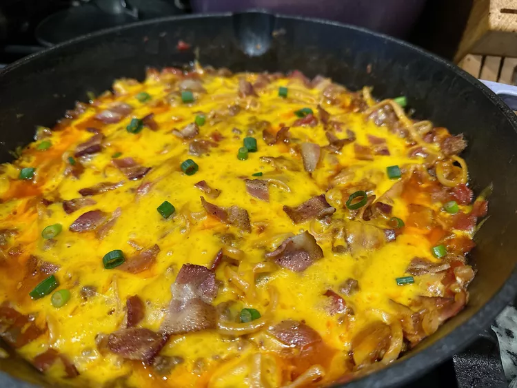

Cowboy Spaghetti
Everyone will love this cowboy spaghetti, a fun twist with bacon, cheese, and pasta in a
spicy beef and tomato sauce. The best part is that it's a one-dish meal, cooked in a cast iron skillet.

Ingredients
- 6 strips bacon
- 1 onion,chopped
- 2 cloves garlic, minced
- 1/2 teaspoon salt
- 1/4 teaspoon freshly ground black pepper
- 1 pound ground beef
- 1 1/2 cups beef broth
- 2 teaspoons Worcestershire sauce
- 2 teaspoons hot sauce, or to taste
- 8 ouces spaghetti noodles
- 1 (10 ounce) can diced tomatoes with green chiles (such as Ro-Tel)
- 1 (14.5 ounce) can fire roasted tomatoes
- 1 (4 ounce) can tomato sauce
- 1/2 cup shredded sharp Cheddar cheese
- 3 green onions, sliced, or as needed for garnish
Directions
- Place bacon in a large cast iron skillet and cook over medium-high heat, turning occasionally, until slightly crisp,
about 7 minutes. Remove bacon slices to a paper towel-lined plate. When bacon is cool enough to handle, crumble roughly and set
aside.
- Add onion to the same skillet with bacon grease and saute until softened, about 3 minutes.
Add garlic, salt, and pepper. Stir until garlic is fragrant, about 30 seconds.
- Add ground beef. Cook and stir until beef is crumbly and no longer pink, about 5 minutes. Lower heat to medium-low,
and stir in beef broth, Worcestershire sauce, and hot sauce. Stir in 1/2 of the crumbled bacon.
- Break spaghetti noodles in half. Scatter over ground beef, making sure noodles are separated. Pour tomates with green chiles, fire-
roasted tomatoes, and tomato sauce over noodles. Cover and cook for 20 minutes.
- Remove the lid and stir to comibne the pasta and sauce. Smooth out mixture and scatter shredded cheese
evenly over top. Sprinkle with remaining bacon. Cover and let cheese melt, about 5 minutes. Garnish with green onions; serve immediately.
